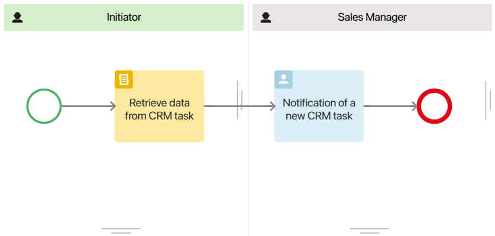
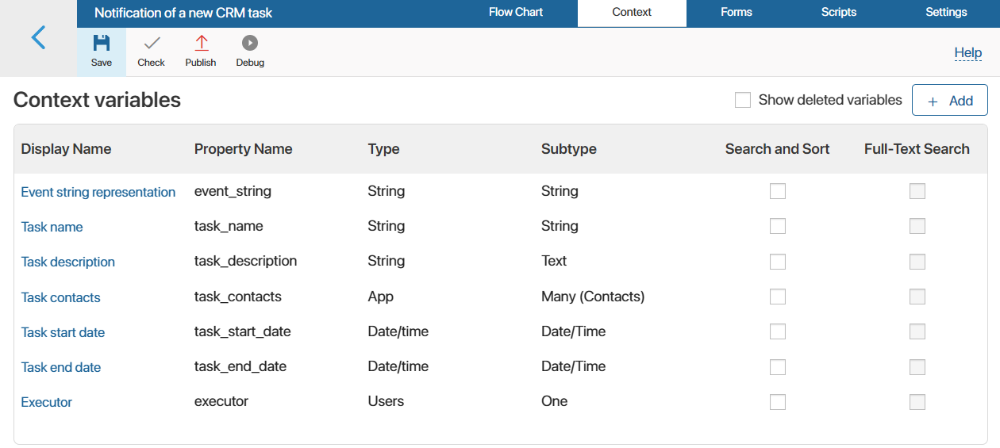
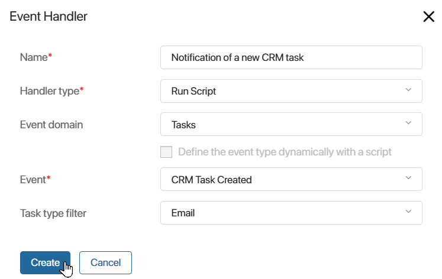

For CRM tasks, you can create event handlers to track various actions and trigger a configured script or business process. The event handler is configured as part of creating a custom module.
начало внимание
Only system administrators can create a module and configure event handlers in it.
конец внимание
Example of a handler for tracking CRM task creation
The data about the task and the associated item is sent to the handler in the form of a JSON file. It is possible to retrieve selected property values from the task context. You can then pass them to the configured business process or script with which the event handler is linked. For example, you can use the task ID, the date of its creation and completion, the user responsible for the execution, etc.
Let’s consider an example of an event handler, in which a JSON file with data about this task is processed using a script when creating a CRM task of the Email type. They are then passed to the business process and written to separate variables. In the process, the sales manager is given the task to read the details of the added email.
To configure the handler, follow the steps below:
- Go to Administration > Modules and create a custom module.
- In the module settings, go to the Processes tab and add a business process that will be executed each time a CRM task is created.
For our example, let’s add a simple process Notification of a new CRM task. Its flowchart will look as follows:

- In the business process designer, go to the Context tab and add variables to which the handler will pass task data as a result of task creation. When creating each variable, select the code, type, and subtypes below:

- Event string representation. A string representation of a JSON object containing data about the CRM task will be written to the variable.
- Task name, Task contacts, Task description, Task start date, Task end date, Executor. Properties to which the received data from the created task is passed using the script in the process.
- Go to the Flow Chart tab. In the Initiator swimlane, place the Script activity right after the start event and set the
afterInitfunction in it. Using the script in the function, a string representation of task data is formed from the JSON file received from the handler, and then the information is written to properties.
Example of a script to retrieve CRM task data from a JSON file
async function afterInit(): Promise<void> { |
- Go to the flowchart and create a static swimlane as the task is assigned to the sales manager recorded as an org chart item.
- To enable the manager to view the data on the created email received from the event handler, place the Task activity in the additional swimlane. Add the following properties to the task form: Task name, Task contacts, Task description, Task start date, Task end date, and Executor.
- Save and publish the process.
- In the module settings, go to the Event Handling tab. Add a handler by specifying its name, the Tasks domain, the CRM Task Created event, the Email task type, and Run Script handler type.

- On the event handler settings page that opens, click the Scripts tab. In the action function, specify the script that will convert the JSON file into a string representation and launch the previously configured Notification of a new CRM task process.
async function action(): Promise<void> {
// Retrieve a string representation of the data on the task whose creation has been triggered by the handler and save it to the task_json_string constant
const task_json_string = JSON.stringify(Context.data.task);
// Start the previously created business process by passing task_json_string to the Event string representation variable from the process context:
await Namespace.processes.crm_task_notification.run({
event_string: task_json_string,
})
}
- On the top panel of the page, click Save and then Publish to activate the event handler.
- Go back to the main page of the module and enable it.
Now with the module enabled, when a user creates a CRM task of the Email type, an event handler will be triggered in the system. The script will launch the configured business process. The sales manager will receive the task, where they will be able to review all the task data.
Found a typo? Select it and press Ctrl+Enter to send us feedback